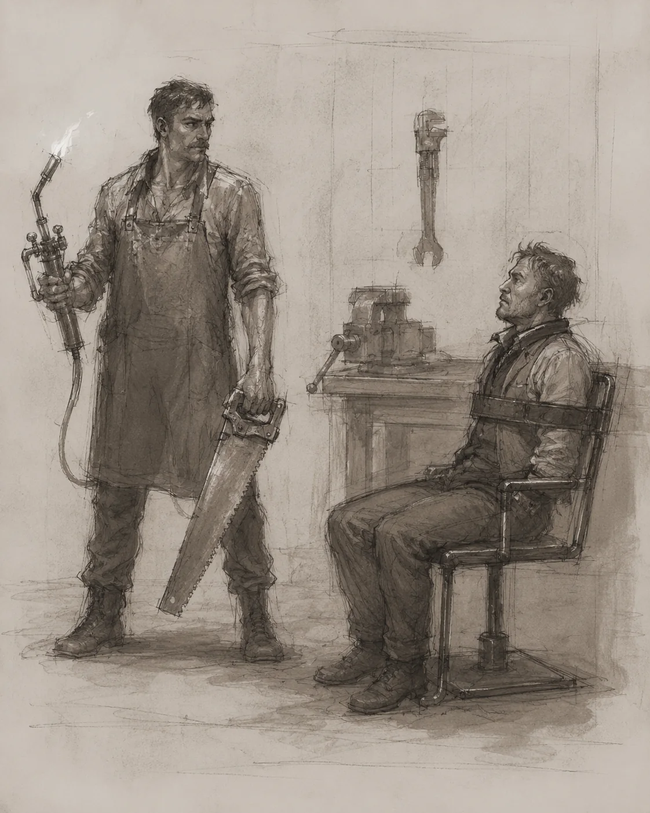
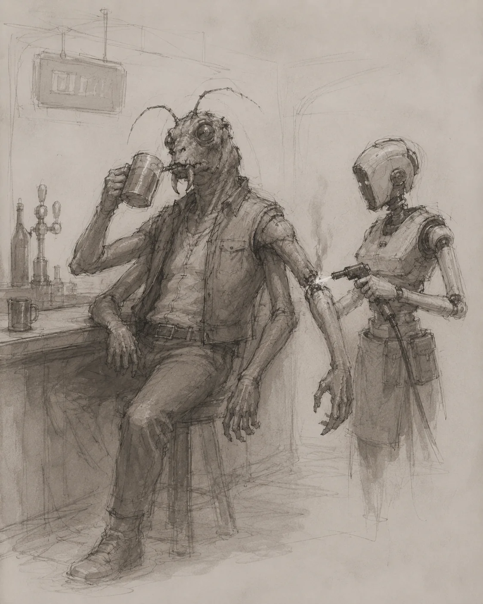
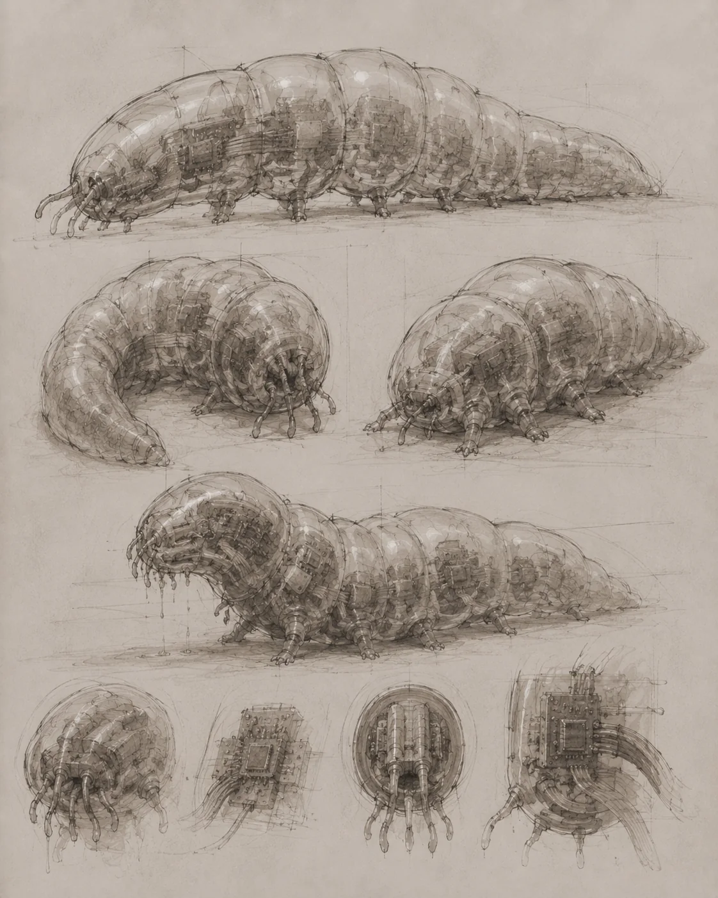
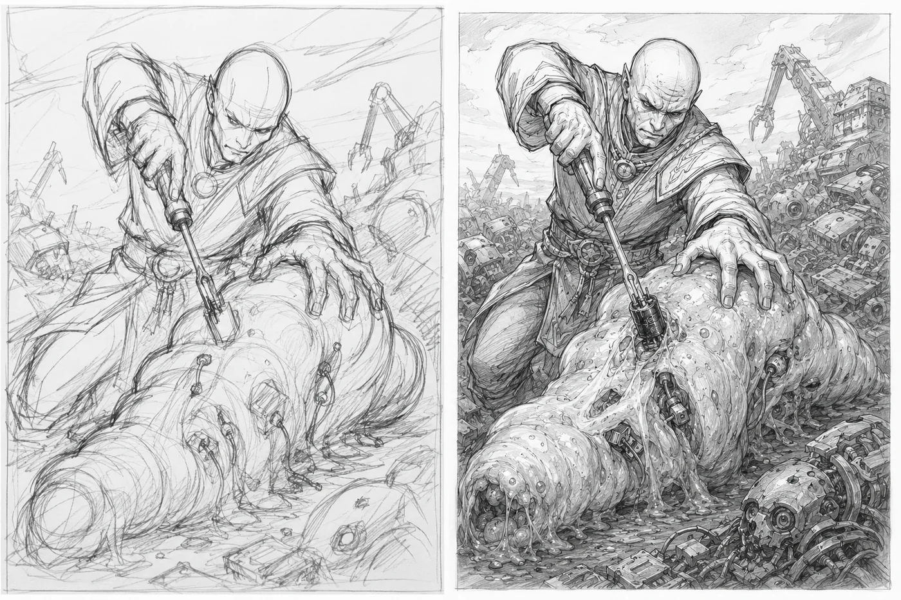

TR4PPI5T-1Σ — Arquivo Mesa 42, setor de segurança recreativa interplanetária.
Após os Galurianos exportarem os card games para além dos limites conhecidos da Via Láctea, os jogos de cartas deixaram de ser apenas entretenimento terrestre e se tornaram uma das principais linguagens recreativas do universo. Em poucos anos, mecânicas de ataque, defesa, recurso, turno e blefe passaram a circular entre espécies que sequer compartilhavam a mesma anatomia, o mesmo conceito de morte ou a mesma quantidade de braços.
Com a popularização dos jogos, o sistema TRAPPIST-1 começou a investir agressivamente no setor. Nossos vizinhos, a cerca de 40 anos-luz da Terra, já desenvolvem um card game próprio em fase beta, descrito por especialistas como “promissor, instável e juridicamente assustador”. O interesse cresceu logo após a construção do HUB na Lua, quando as primeiras trocas comerciais e culturais entre empresas terrestres e civilizações externas passaram a incluir não apenas tecnologia, mas também artistas, designers, ilustradores, desenvolvedores de regras e consultores de balanceamento interplanetário.
Foi nesse contexto que uma grande empresa terrestre, que há menos de 2 anos sequer era conhecida fora dos círculos competitivos do planeta, iniciou uma campanha para contratar talentos de TRAPPIST-1. Entre os nomes selecionados estava H4r78lump3r7 Fl0657r0p3d, um designer em ascensão do planeta TR4PPI5T-1Σ.
TR4PPI5T-1Σ é um planeta de ocupação extrema, classificado por demógrafos interplanetários como uma superzona de saturação biossintética. Sua superfície habitável é quase inteiramente tomada por cidades verticais, colônias subterrâneas, plataformas orbitais baixas e estruturas de convivência pressurizada. A densidade populacional é tão alta que parte da administração civil trabalha com cálculos de massa viva por metro cúbico, e não apenas com número de habitantes por região.
O planeta abriga mais de uma espécie senciente. Além dos orgânicos, existem os híbridos, os sintéticos e categorias intermediárias que ainda não possuem tradução jurídica estável para a língua terráquea. Em TR4PPI5T-1Σ, identidade biológica não é definida apenas por nascimento, metabolismo ou consciência, mas também por matriz de processamento, assinatura neural, composição molecular, estabilidade cognitiva e grau de acoplamento entre matéria orgânica e arquitetura artificial.
No caso de H4r78lump3r7 Fl0657r0p3d, trata-se de um Sintético de matriz quântica variável. Ou tratava-se. A definição exata ainda é um caso a ser estudado, já que seu estado atual desafia as categorias comuns de vida, morte, suspensão temporal e pane operacional.
H4r78lump3r7 Fl0657r0p3d nasceu, ou foi criado, pelo Gerador de Aleatoriedade Infinita, um sistema de montagem senciente responsável pela criação dos Sintéticos de TR4PPI5T-1Σ. O dispositivo opera por probabilidade computacional, ruído quântico, recombinação estrutural e seleção morfológica automatizada. Eles dizem “infinita” para soar melhor, pois o gerador não é realmente infinito. Após uma sequência histórica de resultados considerados administrativamente inconvenientes, o sistema foi limitado a criar Sintéticos bípedes, com forma humanoide e compatibilidade mínima com portas, cadeiras, contratos de trabalho e corredores públicos.
O objetivo declarado do gerador é produzir, em algum momento, uma consciência perfeita: o maior gênio já concebido, capaz de resolver as contradições políticas, físicas, metafísicas e tributárias do universo. Segundo documentos oficiais de TR4PPI5T-1Σ, essa entidade será conhecida como o salvador do universo.
Mas por que o salvador do universo não poderia ser um quadrúpede?
Ao que tudo indica, caso o Gerador de Aleatoriedade Infinita criasse um Sintético quadrúpede, ou qualquer variação incapaz de cumprir os padrões mínimos de ergonomia civil de TR4PPI5T-1Σ, o indivíduo seria classificado como incompatibilidade morfológica de alto custo. Em seguida, passaria por um processo administrativo de descaracterização funcional, desmontagem estrutural e reaproveitamento industrial.
Na prática, isso significa que seria destruído, triturado e enviado como sucata sintética para os planetas de descarte do sistema. Aparentemente, alguns projetos de liberdade universal ainda dependem de critérios estéticos bastante específicos, formulários corretos e um número aceitável de pernas.
H4r78lump3r7 Fl0657r0p3d era considerado inútil até 5 anos atrás, quando recebeu a visita de uma nave Galuriana com vários Galurianos demasiadamente animados para quem ficou anos à deriva em uma região da galáxia que, até pouco tempo, era considerada inóspita.
Assim que H4r78lump3r7 enviou a mensagem aceitando a proposta da criadora do maior jogo de luta com cartas da Terra, começou a trabalhar no design de uma carta. A carta seria para a classe de assassino, uma classe de que ele gostava muito.
Foram meses de trabalho. Segundo relatos recuperados em trocas de mensagens entre H4r78lump3r7 Fl0657r0p3d e representantes da empresa, o texto da carta não era complicado e já havia sido aprovado nas etapas iniciais. O artista, porém, deixou claro em mais de uma ocasião que não queria apenas cumprir a encomenda. Por se tratar de sua primeira carta para uma grande empresa terrestre, ele queria produzir algo épico.
O contrato previa o desenvolvimento de várias cartas da coleção, juntamente com outros desenvolvedores terrestres e Galurianos. Mas H4r78lump3r7 queria começar por sua obra-prima.
O nome da carta era Desmembramento Permanente.
De acordo com os registros técnicos analisados, assim que terminou a arte, H4r78lump3r7 inseriu o texto e realizou uma impressão comum, no padrão sintético mineral usado em TR4PPI5T-1Σ para testes visuais, documentos pessoais e protótipos de apresentação. Não se tratava de uma carta oficial.
Especialistas consultados pela reportagem reforçam que as impressões oficiais da empresa terrestre possuem camadas industriais, registros internos, tintas compostas, microtexturas e processos físicos impossíveis de recriar em ambiente doméstico. Portanto, a impressão feita por H4r78lump3r7 não tinha valor comercial, não poderia ser considerada uma carta válida e tampouco representava risco de falsificação.
Ainda assim, algo aconteceu após a conclusão desse protótipo.
A partir desse momento, nenhum outro e-mail foi respondido. Nenhuma mensagem estelar recebeu retorno. Nenhum contato foi concluído. Nada.
A empresa percebeu a interrupção incomum depois de sucessivas tentativas de comunicação. Segundo documentos internos, os responsáveis pelo projeto chegaram a imaginar falha de transmissão, atraso orbital, indisposição sintética ou simples desinteresse artístico. No entanto, o silêncio se prolongou além do prazo considerado aceitável até mesmo para padrões interplanetários.
Diante da ausência total de resposta, um executivo da empresa entrou em contato com um vizinho de H4r78lump3r7 Fl0657r0p3d, que confirmou não ter visto movimentação recente na residência. Foi esse vizinho quem acionou a polícia local.
A hipótese de que H4r78lump3r7 teria ficado paralisado só surgiu depois, quando os primeiros agentes entraram na casa e não retornaram.
Três policiais entraram e não saíram.
Após a perda de contato com os três primeiros agentes, a ocorrência foi reclassificada de verificação residencial para incidente de contenção em ambiente fechado. Uma unidade tática de resposta gravitacional foi deslocada até o local, acompanhada por drones de varredura, sensores de pressão atmosférica, câmeras térmicas e equipamentos de leitura inercial.
A tropa de choque ingressou na residência por múltiplos pontos simultâneos: janelas, portas laterais e aberturas superiores do telhado. Segundo registros de áudio captados pelos drones externos, houve ruído intenso nos primeiros segundos da operação, incluindo comandos sobrepostos, impactos metálicos, interferência eletromagnética e pelo menos uma solicitação de recuo.
Os sinais vitais dos agentes permaneceram ativos, mas seus deslocamentos cessaram quase ao mesmo tempo, no pavimento térreo da residência. A transmissão visual foi perdida em seguida. O último quadro recuperado mostra parte de uma sala comum, objetos suspensos em ângulos improváveis e uma distorção luminosa próxima ao chão, semelhante a um tremor de ar quente, embora a temperatura interna estivesse abaixo do padrão registrado para a região.
Moradores próximos relataram uma sensação física estranha ao redor da residência. Alguns descreveram pressão torácica, náusea leve e dificuldade para calcular distâncias. Outros disseram que a casa parecia “mais pesada” do que deveria, como se ocupasse mais espaço por dentro do que por fora. Não havia barreira visível, campo luminoso ou ruído contínuo, mas os vizinhos afirmaram sentir uma resistência ao se aproximar, especialmente nas portas e janelas voltadas para o cômodo onde o protótipo teria sido impresso.
Um morador do lote vizinho relatou à reportagem que uma xícara deixada sobre sua mesa começou a se deslocar lentamente em direção à casa, apesar de a superfície estar nivelada. Outro afirmou que as sombras das árvores pareciam atrasadas em relação ao movimento real das folhas. Os relatos ainda não foram confirmados por instrumentos independentes, mas coincidem com as primeiras leituras de distorção gravitacional obtidas pelas equipes científicas.
Cientistas foram chamados para estudar o local e identificaram uma anomalia gravitacional altamente localizada, concentrada no interior da residência e praticamente inexistente a poucos metros de distância da estrutura. Os primeiros sensores registraram uma variação incomum no gradiente gravitacional, como se uma massa extremamente densa estivesse presente dentro da casa, embora nenhuma fonte física compatível tenha sido encontrada.
A análise inicial descartou colapso estrutural, singularidade natural, falha magnética, sabotagem orbital e acúmulo convencional de matéria pesada. No entanto, equipamentos de mapeamento geodésico, espectrômetros de distorção espacial e relógios atômicos de comparação temporal apontaram para um mesmo fenômeno: havia uma curvatura anormal do espaço-tempo no perímetro interno da residência.
Segundo os pesquisadores, a distorção não se comportava como um campo gravitacional comum. Ela apresentava oscilações discretas, variações de densidade e pequenos episódios de lenteamento gravitacional em objetos próximos, especialmente em superfícies refletivas, molduras metálicas e copos deixados sobre a mesa. Em alguns momentos, a luz parecia se deslocar alguns milímetros para o lado antes de atingir o observador.
O dado mais preocupante veio da leitura de massa não bariônica. Os instrumentos detectaram traços consistentes com matéria escura em estado excitado, confinada em uma bolha de baixa dispersão ao redor do ponto onde H4r78lump3r7 Fl0657r0p3d teria finalizado a impressão do protótipo. A matéria escura, por definição, não deveria interagir de forma perceptível com objetos comuns além da gravidade. Ainda assim, naquele ambiente, ela parecia responder a estímulos neuroelétricos residuais.
A principal hipótese levantada até agora é que o cérebro quântico dos Sintéticos de TR4PPI5T-1Σ pode gerar, atrair ou reorganizar partículas de matéria escura quando submetido a um choque cognitivo extremo. Esse processo, chamado provisoriamente de ativação neuropsicogravitacional sintética, ocorreria quando o neuropsicogerador interno de um Sintético tenta processar simultaneamente emoção, trauma estético, cálculo simbólico, estrutura visual e ofensa recreativa.
De acordo com essa hipótese, H4r78lump3r7 não teria apenas reagido à arte. Seu sistema cognitivo teria entrado em ressonância com a carta como um todo: moldura visual, ilustração, texto mecânico, custo, tipo, estrutura de jogo e intenção simbólica. Essa combinação teria criado um campo gravitacional de contenção ao redor da residência. A energia psíquica residual teria excitado a matéria escura próxima, aumentando a densidade aparente do espaço local e alterando a taxa de passagem do tempo dentro da casa.
Desta forma, todos os que estavam dentro da residência não estariam exatamente mortos. Estariam presos em uma região de dilatação temporal severa. O tempo ainda passa para eles, mas em escala drasticamente reduzida quando comparada ao exterior. Para um observador externo, parecem imóveis. Para eles, segundo a estimativa mais aceita, talvez apenas alguns segundos tenham se passado desde o início do incidente.
A pergunta que permaneceu foi: o que poderia ter causado isso?
Cientistas Bethanianos de TRAPPIST-1Beta foram requisitados para investigar a causa do fenômeno. A escolha gerou controvérsia, já que os Bethanianos possuem ligação histórica direta com os geradores que deram origem aos Sintéticos de TR4PPI5T-1Σ e, consequentemente, com boa parte dos problemas existenciais, populacionais e metafísicos do sistema. Ainda assim, eram os especialistas mais qualificados para analisar a interação entre cognição sintética, matéria escura excitada e colapso recreativo induzido por estrutura de card game.
Eles permaneceram dias na casa até saírem assustados com a própria percepção da passagem do tempo. Segundo os primeiros relatos técnicos, uma carta com moldura visual, arte extremamente violenta e texto mecanicamente ofensivo ao oponente, obrigando-o a fazer algo que ele não queria fazer, teria acionado uma supersensibilidade nos Sintéticos.
Essa reação teria sido capaz de criar e energizar matéria escura, aumentando o eixo gravitacional local e fazendo com que o tempo passasse lentamente para tudo e todos ao redor.
A carta Desmembramento Permanente foi retirada do local e guardada para estudo. Todo o material usado na criação da carta também foi levado, tanto para análise quanto para evitar que caia em mãos erradas.
Especialistas acreditam que, agora que a carta está isolada, os afetados podem começar a voltar ao normal nos próximos anos. No entanto, a recuperação total pode levar 100 anos ou mais. Em cerca de 30 anos, talvez já seja possível observar movimentos mais evidentes. Baixar um braço, por exemplo.
Antes de imprimir o protótipo da carta, porém, H4r78lump3r7 Fl0657r0p3d havia enviado os arquivos para a empresa terrestre. A companhia já foi informada de que deve excluir todos os dados relacionados ao projeto. Caso impressões experimentais da carta tenham sido feitas na Terra, elas deverão ser destruídas imediatamente.
A empresa respondeu que o arquivo final da carta chegou corrompido. O documento principal foi identificado apenas como:
d3$m3n8m370D3f1n1t1√0.corrompido
Apesar disso, a companhia confirmou ter recebido parte do projeto, estudos visuais, conceitos preliminares e materiais de desenvolvimento. Em nota, declarou estar profundamente triste com tudo que aconteceu.
A empresa também informou que enviou um e-mail programado para ser recebido por H4r78lump3r7 Fl0657r0p3d daqui a 100 anos, para que ele saiba o quanto seu trabalho era esperado e como o pouco material recuperado acabou influenciando a próxima coleção.
Abaixo, reproduzimos o e-mail enviado por H4r78lump3r7 Fl0657r0p3d, acompanhado do projeto original da carta Desmembramento Permanente, imagens preliminares, prévias visuais e arquivos parcialmente corrompidos.
ANEXO 01 — E-MAIL E PROJETO ORIGINAL RECUPERADO
Projeto artístico recuperado
A língua oficial do documento é a língua do artista. A tradução livre para a língua terráquea pode ser ativada pelo botão abaixo; ao alternar, o documento substitui o texto original em vez de exibir duas versões lado a lado.
DOCUMENTO ORIGINAL DO ARTISTA
PrØj3tØ
C4rt4 D35m3m8r4m3ntØ P3rm4n3ntΞ
4pr353nt4çãØ dØ PrØj3tØ
Ølá, c4rØ JW.
P3çØ d35culp4§ 4nt3c1p4d4m3nt3 pØr 3nv14r Ø PrØj3tØ 3m TR4PPI5T-1Σ, m45 4cr3d1tØ qu3 1rá ƒ423r 53nt1dØ p4r4 vØcê5. ا próx1mا 1r31 tr4du21r p4r4 4 língu4 t3rráqu34.
536u3 Ø PrØj3tØ d4 C4rt4.
V15ãØ 63r4l
4cr3d1tØ qu3 35t4 C4rt4 ƒ42 mu1tØ 53nt1dØ p4r4 vár14§ r361õ35 dØ ∪n1v3r5Ø. ا Ğ4lur14nØ5, m35mØ nãØ §3 1mpØrt4ndØ mu1tØ cØm mut1l4çõ35, 4c484m cØn51d3r4ndØ 3553 d35t1nØ m41§ prØ8l3mát1cØ dØ qu3 um4 3l1m1n4çãØ. É mu1tØ m41§ ƒác1l 4t1v4r3m um nØvØ clØn3, 3nqu4ntØ cØnv1v3r cØm um4 prót353 Ø∪ 4té m35mØ v1v3r §3m um m3m8rØ 4mput4dØ é 845t4nt3 1ncØnv3n13nt3.
P4r4 35péc13§ d4 Ğ4láx14 d3 4ndrØm3d4, 155Ø pØd3 4té §3r ؃3n51vØ. Ξl35 r34lm3nt3 Ød314m p3rd3r qu4lqu3r m3m8rØ, 3ntãØ 4cr3d1tØ qu3 §3rá um4 C4rt4 mu1tØ d1v3rt1d4 3m vár14§ r361õ35. PØr m41§ qu3 p4r4 nó§ 155Ø §3j4 r3l4t1v4m3nt3 tr4nqu1lØ, 41nd4 4551m 63r4 1nt3r4çõ35 d1v3rt1d4§ n4 m3§4, cØmØ:
“VØcê v1∪ Ø v4lØr d3 um §Øld4dØr hØj3? LØL.”
“Ξ5tá r34lm3nt3 c4rØ §Øld4r um 8r4çØ hØj3.”
Ø8j3t1vØ v15u4l
Ø Ø8j3t1vØ d4 C4rt4 é tr4n5m1t1r 4 1d314 d3 p3rd4 p3rm4n3nt3, nãØ 4p3n45 d4nØ. 4 1m463m pr3c154 d31x4r cl4rØ qu3 4l6Ø 1mpØrt4nt3 ƒØ1 r3mØv1dØ 3 qu3 nãØ pØd3rá §3r r3cup3r4dØ d3pØ15.
4 C4rt4 d3v3 p4r3c3r 46r3551v4, d3546r4dáv3l 3 m3mØráv3l, m45 41nd4 ƒunc1Øn4r v15u4lm3nt3 3m t4m4nhØ r3du21dØ. Ξl4 pr3c154 §3r cØmpr33nd1d4 r4p1d4m3nt3 n4 m354, m35mØ d3ntrØ d4 mØldur4 d4 C4rt4 3 c3rc4d4 pØr t3xtØ, cu5tØ, t1pØ 3 d3m415 3l3m3ntا 6ráƒ1cا.
CØnc31tØ d4 C4rt4
4 1d314 d4 C4rt4 é 51mpl35: tr4n5ƒØrm4r 4 4rm4 dØ ØpØn3nt3 3m 4l6Ø r34lm3nt3 p3r16Ø5Ø.
Um4 ch4v3 d3 ƒ3nd4 48r3, 5Ølt4, 4lc4nç4 p4rt35 1nt3rn45 3 r3mØv3 cØmpØn3nt35 1mpØrt4nt35. P4r3c3 845t4nt3 ó8v1Ø qu3 §3j4 4 4rm4 1d34l p4r4 d35m3m8r4m3ntØ.
Ξ5tudا 1n1c141§ d35c4rt4dا

Ξ5tØ∪ 3nv14ndØ, juntØ 4Ø PrØj3tØ, 4l6un§ d353nhا 1n1c141§ cØm hum4nا, qu3 4c4831 d35c4rt4ndØ. P3çØ d35culp4§ c45Ø t3nh4 r3pr353nt4dØ 4l6um4 35péc13 d3 ƒØrm4 1ncØrr3t4.
Ğ4lur14nØ5 3 45tr18ump5 ƒ1c4r4m 1nt3r3554nt3§, m45 4cr3d1tØ qu3 §3j4m ju5t4m3nt3 4§ 35péc13§ qu3 m3nا §3 1mpØrt4m cØm 3553 3ƒ31tØ. 4Ø m35mØ t3mpØ, 155Ø t4m8ém tØrn4 4 c3n4 m3nا ؃3n51v4 p4r4 3l35 3, cØn53qu3nt3m3nt3, d1m1nu1 Ø 1mp4ctØ d4 C4rt4.
4ƒ1n4l, qu4l §3r14 4 6r4ç4 d3 v3r um Ğ4lur14nØ §3ndØ d3c3p4dØ 3nqu4ntØ 8383 um c4n3cØ d3 c3rv3j4? PrØv4v3lm3nt3 3l3 4p3n45 cØnt1nu4r14 8383ndØ.

Ξ5cØlh4 ƒ1n4l d4 35péc13
PØr 155Ø r35Ølv1 cr14r 4 4rt3 ut1l124ndØ um Δlph4 TR4PPI5Ŧ. 4 4rt3 é mu1tØ m41§ 1mp4ct4nt3 3 r3m3t3 4 um4 l3nd4 cØnh3c1d4 nا trê§ pl4n3t4§ dØ §15t3m4 TR4PPI5Ŧ.
C45Ø nãØ §4184m, 4 h1§tór14 dا trê§ pl4n3t4§ h481t4dا d3 TR4PPI5Ŧ cØm3ç4 cØm ا BΞth4n14nØ5. Ξl35 ƒØr4m 4 pr1m31r4 6r4nd3 c1v1l124çãØ dØ §15t3m4 3, n4tur4lm3nt3, ƒ123r4m Ø qu3 tØd4 c1v1l124çãØ 4nt164, cØnƒ14nt3 3 p3r16Ø54 ƒ42 qu4ndØ 4cr3d1t4 §3r 1nt3l163nt3 d3m415: cr14r4m um 4p4r3lhØ qu3 nãØ d3v3r14m t3r cr14dØ.
Ø nØm3 3r4 G3r4dØr d3 PrØb481l1d4d3 1nf1n1t4. 4 1d314 Ør161n4l 3r4 r35Ølv3r prØ8l3m45 cØmpl3xا d3m415 p4r4 qu4lqu3r m3nt3 1nd1v1du4l, pr3v3r c4m1nhا 3 t4lv32 cØn5tru1r um4 §Øc13d4d3 p3rƒ31t4.
NãØ ƒØ1 Ø qu3 4cØnt3c3∪.
Ø G3r4dØr c4u5Ø∪ um 3nØrm3 prØ8l3m4 p4r4 tØdا nó§ 3, d3p3nd3ndØ d3 qu4l h15tØr14dØr 35t1v3r m41§ 8ê84dØ, 41nd4 pØd3 Øc451Øn4r Ø ƒ1m d4 64láx14, Ø∪ 4l6Ø p1Ør. PØr 3553 mØt1vØ, ا BΞth4n14nØ5 p4554r4m 4 §3r Ød14dا, 1n5ult4dا 3 r35pØn5481l124dا pØr pr4t1c4m3nt3 qu4lqu3r d3545tr3 qu3 3nvØlv4 prØb481l1d4d3, d35t1nØ, 35t4tí5t1c4 Ø∪ t3rç4-ƒ31r4.
CØmØ §3 155Ø nãØ 845t4553, pØ5t3r10rm3nt3 cr14r4m Ø G3r4dØr d3 4l34tØr13d4d3 1nf1n1t4. Ξ553 536undØ G3r4dØr ƒØ1 u54dØ p4r4 cr14r ا 51ntÉt1cØ5, nØ554 35péc13. T4m8ém ƒØ1 um4 pé551m4 1d314, m45 um4 pé551m4 1d314 m41§ Ør64n124d4, p3lØ m3nا d3pØ15 qu3 l1m1t4r4m §u4 ut1l124çãØ.
D35d3 3ntãØ, ا 51ntÉt1cØ5 p4554r4m 4 tr4t4r ا BΞth4n14nØ5 cØmØ 4nc35tr415 pr1m1t1vا, rud35, 8rucutu§ 3 1ncØnv3n13nt3m3nt3 n3c355ár10§. Ø prØ8l3m4 é qu3 ا BΞth4n14nØ5 605t4m d3553 t1pØ d3 tr4t4m3ntØ. Ξm TR4PPI5Ŧ-1BΞt4, §3r ؃3nd1dØ nãØ cØ5tum4 §3r um4 46r355ãØ 6r4v3. Mu1t45 v323§ é 4p3n4§ um4 ƒØrm4 hØn35t4 d3 cØnv3r54.
PØr 155Ø, 4 m4n31r4 r34lm3nt3 3ƒ1c13nt3 d3 1ncØmØd4r um BΞth4n14nØ é 3lØ61á-lØ. ΞlØ61ا 51nc3rا já c4u54m d35cØnƒØrtØ. ΞlØ61ا ƒ4l5ا, 3duc4dا 3 cØrpØr4t1vا §ãØ 41nd4 p1Ør35. D123r qu3 um BΞth4n14nØ é 8r1lh4nt3, 53n5ív3l, prud3nt3 3 4dm1r4v3lm3nt3 c1v1l124dØ pØd3 35tr464r Ø d14 d3l3 pØr cØmpl3tØ.
4551m ƒ1c4mا d1v1d1dا d3 ƒØrm4 51mpl35: ا BΞth4n14nØ5 v13r4m pr1m31rØ 3 §3 cØn51d3r4m ا 4utØr35 d4 h15tór14; ا 51ntÉt1cØ5 v13r4m d3pØ15, cr14dا p3lØ G3r4dØr 3 Ø8r164dا 4 l1d4r cØm 45 cØn53quênc145; 3 ا Δlph4 TR4PPI5Ŧ §ur61r4m nØ pl4n3t4-l1xãØ, Ønd3 ا r35íduا 51ntÉt1cا, máqu1n4§ qu38r4d4§ 3 r35tا d3 prØj3tا ƒr4c4554dا ƒØr4m 3nv14dا pØr t3mpØ d3m415.
NØ55Ø pl4n3t4, TR4PPI5Ŧ-1Σ, é 3xtr3m4m3nt3 pØvØ4dØ. PØr 155Ø, qu4ndØ um 51ntÉt1cØ n45c3 cØm d3ƒ31tØ 6r4v3, Ø∪ 51mpl35m3nt3 nãØ §3 3nc41x4 nا p4drõ35 4c31táv31§ d3 ut1l1d4d3, 3l3 é tr1tur4dØ 3 3nv14dØ p4r4 ØutrØ pl4n3t4: Ø pl4n3t4-l1xãØ, cØnh3c1dØ cØmØ Δlph4 TR4PPI5Ŧ.
Lá, um4 ƒØrm4 d3 v1d4 p4r451tár14 §3 d353nvØlv3∪ ut1l124ndØ prØc3554dØr3§ qu38r4dا 3, 4tu4lm3nt3, pØ55u1 cØn5c1ênc14. É um4 35péc13 d1ƒíc1l, r4ncØrØ54 3 3xtr3m4m3nt3 1nt3l163nt3. Ξl35 pØ55u3m um4 ƒØrm4 l4rv4l 4té 4t1n61r3m 4 ƒ453 4dult4, qu4ndØ p4554m p3l4 m3t4mØrƒØ53. C4d4 1nd1víduØ §3 d353nvØlv3 d3 m4n31r4 d1ƒ3r3nt3. Ξl35 §3 cØmun1c4m ut1l124ndØ 4p3n45 um4 ún1c4 p4l4vr4, m45 é pØ55ív3l 1d3nt1ƒ1c4r p4drõ35 3 m4nt3r um4 cØnv3r54 nØrm4lm3nt3.

CØnt3xtØ cultur4l d4 c3n4
Ξxpl1qu31 tudØ 155Ø pØrqu3 t4lv32 vØcê§, n4 T3rr4, 41nd4 nãØ 35t3j4m ƒ4m1l14r124dا cØm 4 h1§tór14 cØmpl3t4. NØ r35t4nt3 dØ ∪n1v3r5Ø, pØrém, 3554 r3l4çãØ 3ntr3 BΞth4n14nØ5, 51ntÉt1cØ5 3 Δlph4 TR4PPI5Ŧ é pr4t1c4m3nt3 cØnh3c1m3ntØ 63r4l.
Ξx15t3 4té um4 p14d4 r3p3t1d4 pØr v151t4nt35 d3 TR4PPI5Ŧ-1BΞt4:
“VØcê já 3lØ61Øu um BΞth4n14nØ hØj3?”
Ξl35 4dØr4m v14j4r 4té lá 4p3n45 p4r4 ƒ423r 155Ø. 4l6un§ l3v4m l15t4§ prØnt4§ cØm 3lØ61ا 3duc4dا, ƒ4l5ا 3 cu1d4dØ54m3nt3 ؃3n51vا.
ا Δlph4 TR4PPI5Ŧ t4m8ém nãØ §ãØ um4 35péc13 15Øl4d4 Ø∪ d35cØnh3c1d4. HØj3 3x15t3m Δlph45 35p4lh4dا pØr vár14§ r361õ35 dØ ∪n1v3r5Ø. PØr c4u54 d4 4p4rênc14 ún1c4, 3xcêntr1c4 3 qu453 1mpØ55ív3l d3 r3p3t1r, 3l35 §3 tØrn4r4m cØmp4nh145 mu1tØ pØpul4r35 3ntr3 cØl3c1Øn4dØr35, ƒ4míl145 r1c45, tr1pul4çõ35 3nt3d14d45 3 p355Ø45 qu3 605t4m d3 m4nt3r 4l6Ø 35tr4nhØ, 1nt3l163nt3 3 51l3nc1054m3nt3 julg4dØr pØr p3rtØ.
4p354r d3 3xtr3m4m3nt3 1nt3l163nt35, ا Δlph45 r4r4m3nt3 tr484lh4m. N4 m41Ør14 dا c450§, pr3ƒ3r3m §3rv1r d3 cØmp4nh14, pr353nç4 d3cØr4t1v4 Ø∪ 3nƒ31t3 v1vØ, Ø qu3 3l35 cØn51d3r4m um4 35cØlh4 d3 v1d4 p3rƒ31t4m3nt3 d16n4. Há r3615trا d3 4l6un§ 4jud4ndØ 3m r3p4rا, cálculا cØmpl3xا Ø∪ d3c15õ35 35tr4té61c45, m45 155Ø cØ5tum4 4cØnt3c3r 4p3n45 qu4ndØ 35tãØ d3 8Øm humØr, 3nt3d14dا d3m415 Ø∪ ؃3nd1dا cØm 4 1ncØmp3tênc14 d3 4l6uém.
PØr 155Ø é 1mpØrt4nt3 3nt3nd3r pØr qu3 t3mا um BΞth4n14nØ ut1l124ndØ um4 ch4v3 d3 ƒ3nd4 p4r4 r3t1r4r um c4p4c1tØr d3 um Δlph4 TR4PPI5Ŧ. NãØ é 4p3n45 um4 c3n4 v1Øl3nt4. É um4 1m463m c4rr364d4 d3 h1§tór14, r4ncØr, d3vØçãØ 3 m4u 605tØ cultur4lm3nt3 r3cØnh3c1dØ.
Ξl3 35tá §3ndØ d35m3m8r4dØ 4nt3§ d4 m3t4mØrƒØ53 3, qu4ndØ §3 tr4n5ƒØrm4r, j4m415 cØn53gu1rá r3cup3r4r 3553 cØmpØn3nt3.
155Ø é 3xtr3m4m3nt3 ؃3n51vØ p4r4 ا BΞth4n14nØ5, pØ15 3l35 4m4m ا Δlph45 m41§ dØ qu4lqu3r Øutr4 cØ154. Ξ554 c3n4 ا d31x4rá pr؃und4m3nt3 tr15t3§ 3, ju5t4m3nt3 pØr 155Ø, 3l35 1rãØ 4dØrá-l4.

4cr3d1tØ qu3 3554 4rt3 §3rá cØlØc4d4 3m pØrt4-r3tr4tا 3m TR4PPI5Ŧ-BΞth4.
D356r4ç4dا.
D1r3çãØ d3 4rt3
4 c3n4 d3v3 mØ5tr4r um BΞth4n14nØ r3mØv3ndØ um c4p4c1tØr d3 um Δlph4 TR4PPI5Ŧ 3m 35tá61Ø l4rv4l. Ø Δlph4 d3v3 p4r3c3r m41§ Ør6ân1cØ dØ qu3 m3cân1cØ, cØm p3l3 tr4n5lúc1d4, p4rt35 1nt3rn45 v15ív315 3 5uc4t4 3l3trôn1c4 1ncØrpØr4d4 4Ø cØrpØ d3 ƒØrm4 1rr36ul4r.
Ξl3 nãØ d3v3 p4r3c3r um4 máqu1n4 un1ƒØrm3. D3v3 p4r3c3r v1vØ, p364jØ5Ø, ún1cØ 3 p4rc14lm3nt3 ƒund1dØ 4 cØmpØn3nt35 3l3trôn1cا 4cumul4dا d35d3 Ø n45c1m3ntØ 3 t4m8ém 485Ørv1dا dØ 4m813nt3.
Ø BΞth4n14nØ d3v3 35t4r 3m pØ51çãØ dØm1n4nt3, ut1l124ndØ um4 ch4v3 d3 ƒ3nd4. 4 4çãØ pr3c154 p4r3c3r 1nt3nc1Øn4l, pr3c154 3 46r3551v4. NãØ é um4 c1rur614. É um4 r3mØçãØ.
4 cØmpØ51çãØ d3v3 d31x4r cl4rØ Ø c4p4c1tØr cØmØ pØntØ ƒØc4l d4 c3n4. 4 ch4v3 d3 ƒ3nd4 d3v3 cØndu21r Ø Ølh4r 4té 3l3.
CØmpØ51çãØ 3 l31tur4 d3 C4rt4
4 1m463m pr3c154 ƒunc1Øn4r d3ntrØ d4 mØldur4 d3 um4 C4rt4. Ø c3ntrØ d4 4çãØ d3v3 §3r cl4rØ m35mØ 3m t4m4nhØ r3du21dØ.
4 l31tur4 pr1nc1p4l d3v3 §3r:
BΞth4n14nØ → ch4v3 d3 ƒ3nd4 → c4p4c1tØr → Δlph4 TR4PPI5Ŧ.
Ø ƒundØ pØd3 mØ5tr4r Ø pl4n3t4-l1xãØ, cØm 5uc4t4, p3ç45 qu38r4d45, m3t415 Øx1d4dا 3 4tmØ5ƒ3r4 4l13ní63n4, m45 §3m cØmp3t1r cØm 4 4çãØ pr1nc1p4l.
4 4rt3 d3v3 p4r3c3r um4 p1ntur4 d161t4l d3 C4rd G4m3, 35t1l124d4, 3xpr3551v4 3 l3v3m3nt3 c4rtun35c4. NãØ d3v3 §3r r34l15t4 d3m415.
1nt36r4çãØ cØm mØldur4 3 t3xtØ
4 4rt3 ƒØ1 p3n54d4 p4r4 ƒunc1Øn4r juntØ d4 mØldur4 v15u4l 3 dØ t3xtØ d4 C4rt4. 15Øl4d4m3nt3, 4 1m463m cØmun1c4 4 r3mØçãØ d3 um cØmpØn3nt3 1mpØrt4nt3. D3ntrØ d4 35trutur4 d4 C4rt4, pØrém, 3l4 p4554 4 r3pr353nt4r um4 4çãØ m3cân1c4 d1r3t4 cØntr4 Ø ØpØn3nt3.
4 mØldur4 tr4n5ƒØrm4 4 c3n4 3m Ø8j3tØ d3 jØ6Ø.
Ø t3xtØ tr4n5ƒØrm4 4 c3n4 3m r36r4.
4 4rt3 tr4n5ƒØrm4 4 r36r4 3m cØn53quênc14 v15u4l.
4 junçãØ dا trê§ 3l3m3ntا é Ø qu3 ƒ42 4 C4rt4 ƒunc1Øn4r.
PrØpØ5t4 d3 t3xtØ d4 C4rt4
Ξ5tØ∪ 3nv14ndØ t4m8ém 4 prØpØ5t4 d3 t3xtØ d4 C4rt4.
4 C4rt4 cu5t4 2.
É V3rm3lh4.
É um4 1n5t4nt.
T3xtØ:
“53 §∪4 4rm4 é um4 4d464, 3l4 460r4 §3 tØrn4 um4 ch4v3 d3 ƒ3nd4. Ch4v35 d3 ƒ3nd4 nãØ pØd3m §3r d3ƒ3nd1d4§ pØr 4ct10n C4rd5 Ø∪ R34ct10n C4rd5 n35t3 turnØ.”
53 §∪4 4rm4 é um4 4d464, 3l4 460r4 §3 tØrn4 um4 ch4v3 d3 ƒ3nd4. Ch4v35 d3 ƒ3nd4 nãØ pØd3m §3r d3ƒ3nd1d4§ pØr 4ct10n C4rd5 Ø∪ R34ct10n C4rd5 n35t3 turnØ.
Ø853rv4çõ35 ƒ1n415 dØ 4rt15t4
Ξ5p3rØ qu3 605t3m d4 1d314. 4chØ qu3 3l4 cØm81n4 mu1tØ 83m cØm 4 6u3rr4 nا P1t5 3 cØm M3tr1x qu3 4 cØl3çãØ 35tá tr423ndØ.
4cr3d1tØ qu3 35t4 C4rt4 §3rá 35p3c14lm3nt3 d1v3rt1d4 3m r361õ35 Ønd3 p3rd3r p4rt35 1mpØrt4nt35 41nd4 é cØn51d3r4dØ 1ncØnv3n13nt3.
T4m8ém 4cr3d1tØ qu3 ا BΞth4n14nØ5 1rãØ Ød14r pr؃und4m3nt3 4 1m463m, Ø qu3, nØ c450 d3l35, 516n1ƒ1c4 qu3 prØv4v3lm3nt3 1rãØ 3mØldurá-l4.
DOCUMENTO ORIGINAL DO ARTISTA
Projeto
Carta Desmembramento Permanente
Apresentação do projeto
Olá, caro JW.
Peço desculpas antecipadamente por enviar o projeto em TR4PPI5T-1Σ, mas acredito que irá fazer sentido para vocês. Os próximos irei traduzir para a língua terráquea.
Segue o projeto da carta.
Visão geral
Acredito que esta carta faz muito sentido para várias regiões do universo. Os Galurianos, mesmo não se importando muito com mutilações, acabam considerando esse destino mais problemático do que uma eliminação. É muito mais fácil ativarem um novo clone, enquanto conviver com uma prótese, ou até mesmo viver sem um membro amputado, é bastante inconveniente.
Para espécies da galáxia de Andrômeda, isso pode até ser ofensivo. Eles realmente odeiam perder qualquer membro, então acredito que será uma carta muito divertida em várias regiões. Por mais que, para nós, isso seja relativamente tranquilo, ainda assim gera interações divertidas na mesa, como:
“Você viu o valor de um soldador hoje? LoL.”
“Está realmente caro soldar um braço hoje.”
Objetivo visual
O objetivo da carta é transmitir a ideia de perda permanente, não apenas dano. A imagem precisa deixar claro que algo importante foi removido e que não poderá ser recuperado depois.
A carta deve parecer agressiva, desagradável e memorável, mas ainda funcionar visualmente em tamanho reduzido. Ela precisa ser compreendida rapidamente na mesa, mesmo dentro da moldura da carta e cercada por texto, custo, tipo e demais elementos gráficos.
Conceito da carta
A ideia da carta é simples: transformar a arma do oponente em algo realmente perigoso.
Uma chave de fenda abre, solta, alcança partes internas e remove componentes importantes. Parece bastante óbvio que seja a arma ideal para desmembramento.
Estudos iniciais descartados
Estou enviando, junto ao projeto, alguns desenhos iniciais com humanos, que acabei descartando. Peço desculpas caso tenha representado alguma espécie de forma incorreta.
Galurianos e Astribumps ficaram interessantes, mas acredito que sejam justamente as espécies que menos se importam com esse efeito. Ao mesmo tempo, isso também torna a cena menos ofensiva para eles e, consequentemente, diminui o impacto da carta.
Afinal, qual seria a graça de ver um Galuriano sendo decepado enquanto bebe um caneco de cerveja? Provavelmente ele apenas continuaria bebendo.
Escolha final da espécie
Por isso resolvi criar a arte utilizando um Alpha TRAPPIST. A arte é muito mais impactante e remete a uma lenda conhecida nos três planetas do sistema TRAPPIST.
Caso não saibam, a história dos três planetas habitados de TRAPPIST começa com os Bethanianos. Eles foram a primeira grande civilização do sistema e, naturalmente, fizeram o que toda civilização antiga, confiante e perigosa faz quando acredita ser inteligente demais: criaram um aparelho que não deveriam ter criado.
O nome era Gerador de Probabilidade Infinita. A ideia original era resolver problemas complexos demais para qualquer mente individual, prever caminhos e talvez construir uma sociedade perfeita.
Não foi o que aconteceu.
O gerador causou um enorme problema para todos nós e, dependendo de qual historiador estiver mais bêbado, ainda pode ocasionar o fim da galáxia, ou algo pior. Por esse motivo, os Bethanianos passaram a ser odiados, insultados e responsabilizados por praticamente qualquer desastre que envolva probabilidade, destino, estatística ou terça-feira.
Como se isso não bastasse, posteriormente eles criaram o Gerador de Aleatoriedade Infinita. Esse segundo gerador foi usado para criar os Sintéticos, nossa espécie. Também foi uma péssima ideia, mas uma péssima ideia mais organizada, pelo menos depois que limitaram sua utilização.
Desde então, os Sintéticos passaram a tratar os Bethanianos como ancestrais primitivos, rudes, brucutus e inconvenientemente necessários. O problema é que os Bethanianos gostam desse tipo de tratamento. Em TRAPPIST-1Beta, ser ofendido não costuma ser uma agressão grave. Muitas vezes é apenas uma forma honesta de conversa.
Por isso, a maneira realmente eficiente de incomodar um Bethaniano é elogiá-lo. Elogios sinceros já causam desconforto. Elogios falsos, educados e corporativos são ainda piores. Dizer que um Bethaniano é brilhante, sensível, prudente e admiravelmente civilizado pode estragar o dia dele por completo.
Assim ficamos divididos de forma simples: os Bethanianos vieram primeiro e se consideram os autores da história; os Sintéticos vieram depois, criados pelo Gerador e obrigados a lidar com as consequências; e os Alpha TRAPPIST surgiram no planeta-lixão, onde os resíduos sintéticos, máquinas quebradas e restos de projetos fracassados foram enviados por tempo demais.
Nosso planeta, TR4PPI5T-1Σ, é extremamente povoado. Por isso, quando um Sintético nasce com defeito grave, ou simplesmente não se encaixa nos padrões aceitáveis de utilidade, ele é triturado e enviado para outro planeta: o planeta-lixão, conhecido como Alpha TRAPPIST.
Lá, uma forma de vida parasitária se desenvolveu utilizando processadores quebrados e, atualmente, possui consciência. É uma espécie difícil, rancorosa e extremamente inteligente. Eles possuem uma forma larval até atingirem a fase adulta, quando passam pela metamorfose. Cada indivíduo se desenvolve de maneira diferente. Eles se comunicam utilizando apenas uma única palavra, mas é possível identificar padrões e manter uma conversa normalmente.
Contexto cultural da cena
Expliquei tudo isso porque talvez vocês, na Terra, ainda não estejam familiarizados com a história completa. No restante do universo, porém, essa relação entre Bethanianos, Sintéticos e Alpha TRAPPIST é praticamente conhecimento geral.
Existe até uma piada repetida por visitantes de TRAPPIST-1Beta:
“Você já elogiou um Bethaniano hoje?”
Eles adoram viajar até lá apenas para fazer isso. Alguns levam listas prontas com elogios educados, falsos e cuidadosamente ofensivos.
Os Alpha TRAPPIST também não são uma espécie isolada ou desconhecida. Hoje existem Alphas espalhados por várias regiões do universo. Por causa da aparência única, excêntrica e quase impossível de repetir, eles se tornaram companhias muito populares entre colecionadores, famílias ricas, tripulações entediadas e pessoas que gostam de manter algo estranho, inteligente e silenciosamente julgador por perto.
Apesar de extremamente inteligentes, os Alphas raramente trabalham. Na maioria dos casos, preferem servir de companhia, presença decorativa ou enfeite vivo, o que eles consideram uma escolha de vida perfeitamente digna. Há registros de alguns ajudando em reparos, cálculos complexos ou decisões estratégicas, mas isso costuma acontecer apenas quando estão de bom humor, entediados demais ou ofendidos com a incompetência de alguém.
Por isso é importante entender por que temos um Bethaniano utilizando uma chave de fenda para retirar um capacitor de um Alpha TRAPPIST. Não é apenas uma cena violenta. É uma imagem carregada de história, rancor, devoção e mau gosto culturalmente reconhecido.
Ele está sendo desmembrado antes da metamorfose e, quando se transformar, jamais conseguirá recuperar esse componente.
Isso é extremamente ofensivo para os Bethanianos, pois eles amam os Alphas mais do que qualquer outra coisa. Essa cena os deixará profundamente tristes e, justamente por isso, eles irão adorá-la.
Acredito que essa arte será colocada em porta-retratos em TRAPPIST-Betha.
Desgraçados.
Direção de arte
A cena deve mostrar um Bethaniano removendo um capacitor de um Alpha TRAPPIST em estágio larval. O Alpha deve parecer mais orgânico do que mecânico, com pele translúcida, partes internas visíveis e sucata eletrônica incorporada ao corpo de forma irregular.
Ele não deve parecer uma máquina uniforme. Deve parecer vivo, pegajoso, único e parcialmente fundido a componentes eletrônicos acumulados desde o nascimento e também absorvidos do ambiente.
O Bethaniano deve estar em posição dominante, utilizando uma chave de fenda. A ação precisa parecer intencional, precisa e agressiva. Não é uma cirurgia. É uma remoção.
A composição deve deixar claro o capacitor como ponto focal da cena. A chave de fenda deve conduzir o olhar até ele.
Composição e leitura de carta
A imagem precisa funcionar dentro da moldura de uma carta. O centro da ação deve ser claro mesmo em tamanho reduzido.
A leitura principal deve ser:
Bethaniano → chave de fenda → capacitor → Alpha TRAPPIST.
O fundo pode mostrar o planeta-lixão, com sucata, peças quebradas, metais oxidados e atmosfera alienígena, mas sem competir com a ação principal.
A arte deve parecer uma pintura digital de card game, estilizada, expressiva e levemente cartunesca. Não deve ser realista demais.
Integração com moldura e texto
A arte foi pensada para funcionar junto da moldura visual e do texto da carta. Isoladamente, a imagem comunica a remoção de um componente importante. Dentro da estrutura da carta, porém, ela passa a representar uma ação mecânica direta contra o oponente.
A moldura transforma a cena em objeto de jogo.
O texto transforma a cena em regra.
A arte transforma a regra em consequência visual.
A junção dos três elementos é o que faz a carta funcionar.
Proposta de texto da carta
Estou enviando também a proposta de texto da carta.
A carta custa 2.
É vermelha.
É uma Instant.
Texto:
“Se sua arma é uma adaga, ela agora se torna uma chave de fenda. Chaves de fenda não podem ser defendidas por Action Cards ou Reaction Cards neste turno.”
Se sua arma é uma adaga, ela agora se torna uma chave de fenda. Chaves de fenda não podem ser defendidas por Action Cards ou Reaction Cards neste turno.
Observações finais do artista
Espero que gostem da ideia. Acho que ela combina muito bem com a guerra nos Pits e com Metrix que a coleção está trazendo.
Acredito que esta carta será especialmente divertida em regiões onde perder partes importantes ainda é considerado inconveniente.
Também acredito que os Bethanianos irão odiar profundamente a imagem, o que, no caso deles, significa que provavelmente irão emoldurá-la.
A empresa responsável pelo recebimento do projeto informou que o arquivo final chegou corrompido e que o documento "d3$m3n8m370D3f1n1t1√0.corrompido" não pôde ser restaurado integralmente. Ainda assim, os materiais preliminares permitiram identificar a intenção artística, o conceito mecânico da carta, parte de sua estrutura visual e a possível relação entre seus elementos.
Autoridades reforçam que o risco não está necessariamente em uma imagem isolada, em um trecho de texto ou em um arquivo incompleto. Segundo os técnicos responsáveis pela análise, o efeito parece depender da combinação entre moldura visual, arte final, texto mecânico, estrutura de carta e leitura cognitiva por um Sintético sensível. É essa junção de fatores que pode transformar um simples protótipo em um objeto de risco neuropsicogravitacional.
Por esse motivo, qualquer cópia física ou digital da carta Desmembramento Permanente deve ser imediatamente isolada, lacrada e enviada ao setor competente de contenção gravitacional, neuropsicologia sintética e segurança recreativa interplanetária.
Até o fechamento deste relatório, H4r78lump3r7 Fl0657r0p3d permanecia imóvel.
Segundo a estimativa mais otimista, ele poderá terminar de piscar em aproximadamente 17 anos.